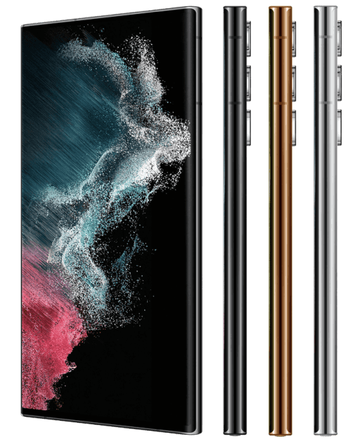

<section class="video__section">
    <div class="container">
        <div class="video__section-wrapper">
            <div class="header__poligon-block video__poligon-block">
                
                
                
                
                
                
            </div>
            <h2 class="video__title">
                Desain unik dan <br> multitasking Samsung <br> Galaxy S22 Ultra
            </h2>
            <p class="video__text">
                <span>Samsung</span> telah meluncurkan desain modul kamera baru yang unik. Ini dengan lancar "mengalir" ke wajah smartphone dan termasuk empat kamera dengan kinerja yang sangat baik.
            </p>
            
            <div class="video__btns">
                <a href="#card" class="header__order-btn">
                    <span>Buat pesanan</span>
                    
                </a>
                <a data-fancybox href="https://youtu.be/2Jdpwb_0F5w" class="header__order-btn video__btn">
                    <span>Tonton video</span>
                    
                </a>
            </div>
        </div>
    </div>
</section>